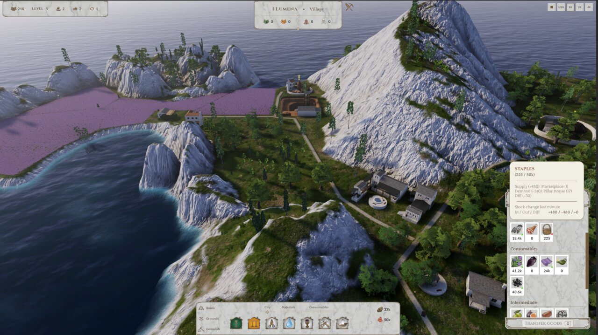
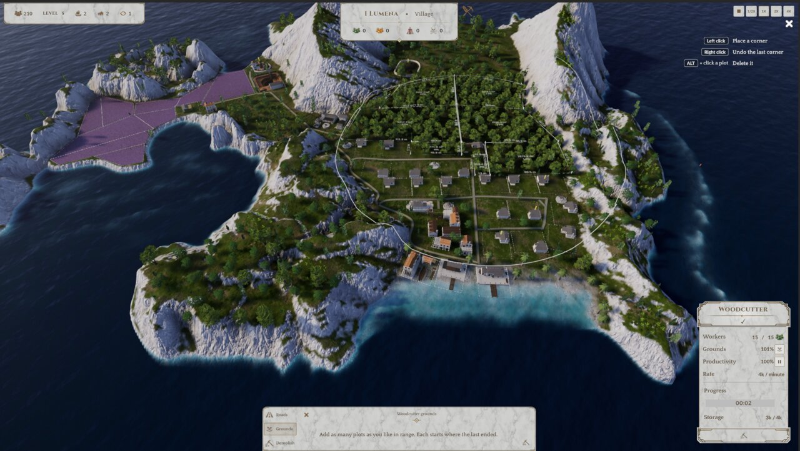
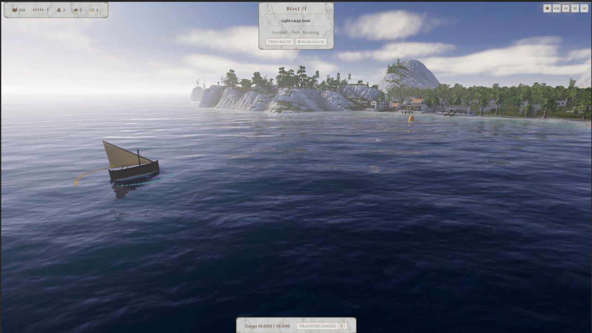
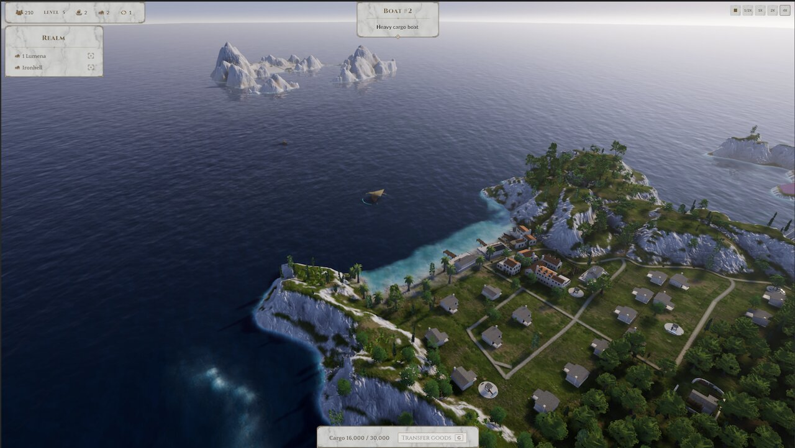
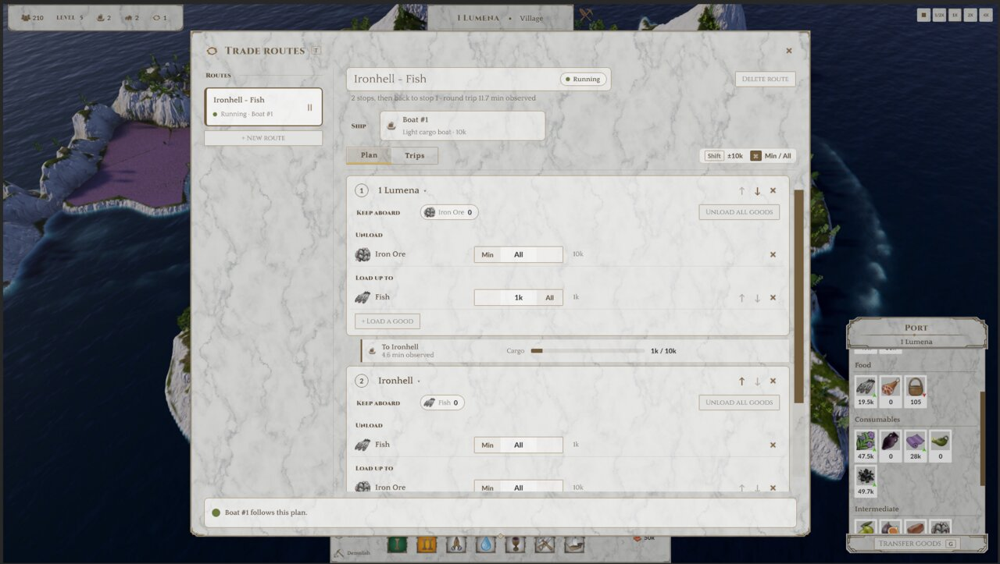

It's a game.
Big milestone
A month ago I wrote that it finally feels like a game. Now I can say it: it's a game.
All the core pillars are in. You build up a settlement, it grows into the next tier, you build boats, sail to another island, found a new settlement there, and connect the islands with automated trade routes. Every piece of what I wanted to make is implemented. Not polished, but there!
Making it readable
Andris and Bence played the build, and they ran into the confusing parts I kind of already knew about. Watching someone else get stuck on them is different though. You can't unsee it.
So the first weeks of September went into clarity: warnings when a building can't work, tooltips, workforce and construction material displays, storage limits, and supply/demand rates so you can actually see if something runs out. Placement got better snapping, rotation and feedback, and editing grounds is a lot less fiddly.
None of this is exciting to show on its own. But it's the difference between "what is going on?" and "oh, I don't have enough workers."


The next tier
Last time I said the next set of buildings creates the first progression unlock. It's not just designed anymore, it's in the game. Andris delivered nine new buildings: Shaper housing, Brick Kiln, Weaver, Oil Press, Fig Press, Lamp Maker, Workshop, Tavern and the Boat Builder. I plugged them all into the playable build, and the Workshop opens up the next tier, so the build menu grows as your town grows. Thank you Andris, they look great in there!
Boats!
This was the part I was waiting for. You build a cargo boat at the Boat Builder and launch it. It finds a path around the land, reacts to wind and current, tacks when it has to go upwind, and rows when there's no other way. I can watch it sail around a headland for way too long.

Connecting the islands
When a boat reaches an island with no Port, you can found a new settlement right from the boat. The second island is a mining island: it has iron ore, but it can't produce its own timber or staple food. Those have to come from the first island.

And that was last month's target: connect the islands. Done! You set up automated trade routes, the boats sail them with realistic sailing, and the goods keep flowing. The UI and UX for routes is pretty decent to start with. So now the islands really need each other.

What's next
Now that all the pieces are implemented, I'll start iterating on the game feel, from my own playing and from watching people play my game.
After these early rounds and their feedback are integrated, I want to invite complete strangers to play it too. At the same time I'll keep adding more and more polish into this scope.
It's getting very very enjoyable to develop this game now!
Thanks for reading!
If you want to see how it plays out, sign up for the next devlog by email.
Comments